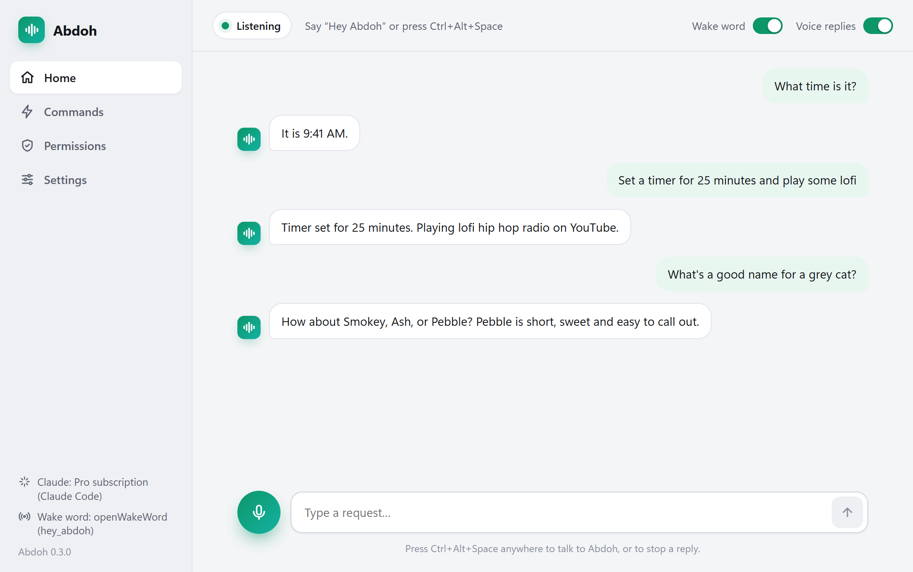
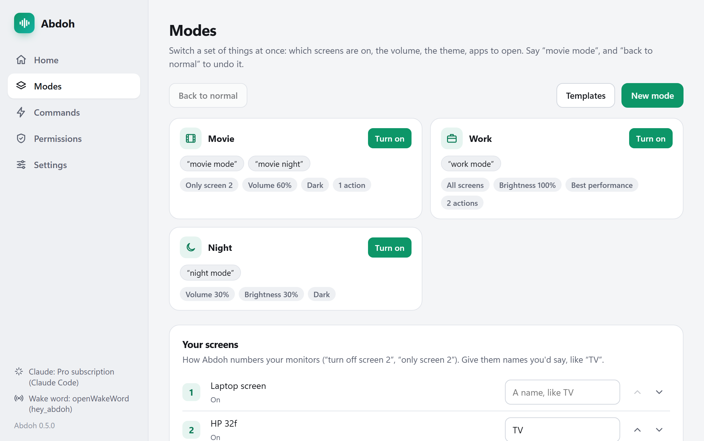
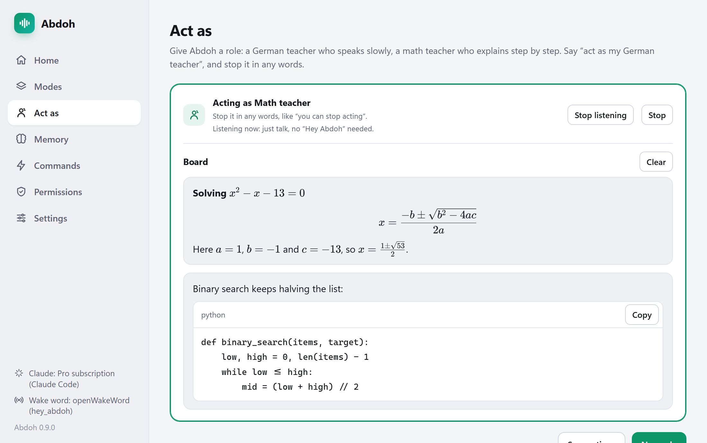
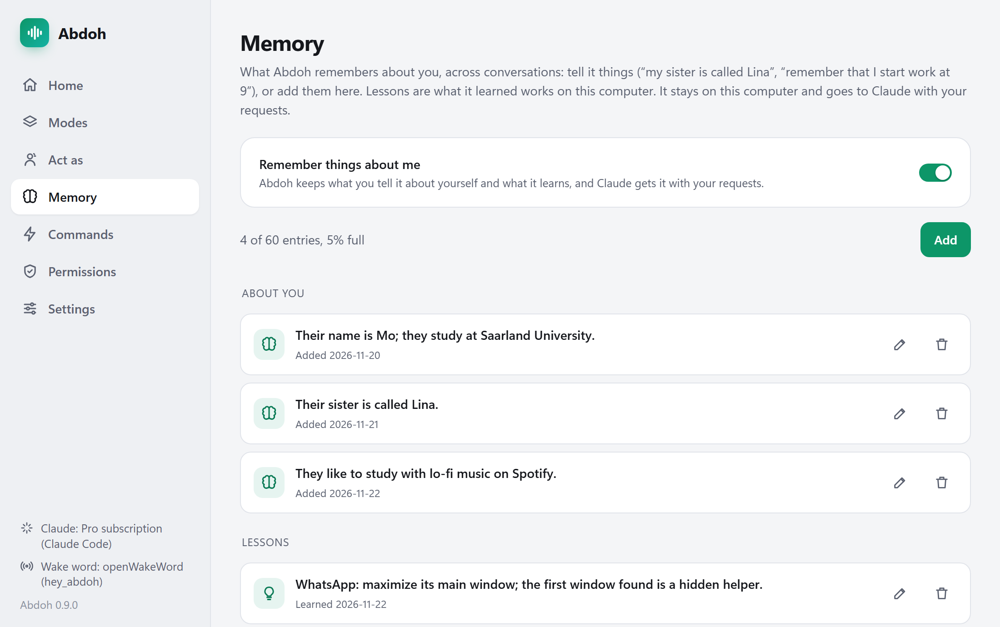

Say “Hey Abdoh” and just talk. It runs the routines you set up, switches your PC into modes, sets reminders, controls your music, screens and speakers, and asks Claude about everything else, with your own Claude account.
Download for Windows
Abdoh lives in the corner of your screen. Talk to it, or type when you can't.
“Good morning” opens your news and your playlist. Make commands with a simple form, or start from templates. They run instantly.
Questions, the latest news, even sorting your files, with your own Claude account.
Say “Hey Abdoh” and keep talking. Follow up without the wake word, and just start talking to stop it mid-sentence. It remembers what you said.
Timers, reminders, notes, exact volume, brightness, quick maths, screenshots, dictation, any installed app. In milliseconds, no Claude needed.
Turn the web, your screen, your files and each kind of action on or off, and give Abdoh your own instructions.
Speech recognition that copes with accents runs on your own PC, in English, Arabic and more. Only requests you send to Claude go online.
“Movie mode” turns off the screens you don't need and sets the volume; “work mode” turns them all on and opens your apps. “Back to normal” undoes it all. Modes can switch on by themselves at a time.
“What does this error mean?” Claude decides when it needs to see, and Abdoh tells you when it looks at the screen you're using.
Monitors on and off, speakers or headphones, dark mode, night light, power modes, one app's volume, windows to another screen, a shutdown timer for the film. Plug in a headset or undock, and Abdoh follows.
“Act as my German teacher” or “my math teacher”: Abdoh speaks slower, answers longer, and writes code and formulas on a board while it explains, line by line.
Tell it about yourself once, and it knows next time. It learns what works on your PC, too. See, edit or switch it off on the Memory page.
“Make a command called good evening that locks the screen”, “add Discord to work mode”. Abdoh asks for what's missing, says what it changed, and “undo that” puts it back. Ask for the same few things twice and it offers to make them one command.
Open a folder and let Claude or your ChatGPT plan read, change and run your code. Every step shows as a card with its diff, it asks before anything risky, and you switch models mid-chat.
“Watch me fill in this form and tell me if I get anything wrong”: Abdoh looks as your screen changes, stays quiet while you do fine, and speaks up when you slip. “Stop watching” ends it.
With Claude and your ChatGPT plan connected, ChatGPT takes over when Claude's usage limit runs out, says so once, and hands back when it resets.
Every feature, what to say and where it lives, in one searchable page. “Why did you stop talking?” Abdoh reads its own log and tells you.
No terminal, no config files. Abdoh walks you through it.
A normal installer, just for you. No admin rights needed.
A live level meter shows that Abdoh hears you. Pick a voice you like.
Sign in with your own Claude account, or skip it: your commands work without it.


Give it a role and it teaches you: a German teacher who speaks slowly, a math teacher, a programming teacher.
What's better seen than heard goes on the board: code, formulas (drawn properly, even for uni maths), worked steps and word lists. Abdoh writes a line, explains it, then writes the next. During a lesson you just talk, no “Hey Abdoh” needed, and you stop it in any words.
Tell Abdoh about yourself and it remembers, across conversations.
Your sister's name, when you start work, how you like your music. It also keeps lessons: what worked on your computer when something didn't. Everything is on the Memory page, where you can change it, delete it or switch memory off. It stays on your PC and goes to Claude with your requests, never passwords or card numbers.

Abdoh doesn't come with Claude, and it never uses anyone else's. It runs Claude Code, Anthropic's official app, signed in with your own Claude account, so requests count toward your own plan.
You sign in on Anthropic's own page. Abdoh never sees your password.
No Claude plan? Add an API key from the Claude Console (pay as you go), or use Abdoh without Claude: your commands, timers, apps, music and YouTube all work.
Something else? Ask on GitHub.
That's SmartScreen. Abdoh's installer isn't code-signed yet (a signing certificate costs money), so Windows doesn't recognize it. Click More info, then Run anyway.
Windows 10 or 11 (64-bit), a microphone, 8 GB of memory, about 2 GB of disk space, and an internet connection for Claude. Speech recognition works offline: its model comes with the installer, which is why the download is large.
If it has 4 GB or more of its own memory (NVIDIA, AMD or Intel Arc), yes: Abdoh downloads a faster speech model for it in the background the first time (2.4 GB), then understands you about twice as fast with less memory, and your processor stays free. Without such a card it runs on the processor, as always. Switch it off under Settings → Speech recognition.
Not through your account: the free plan doesn't include Claude Code, which Abdoh uses. You can add an API key instead, or use Abdoh without Claude.
No. Listening for “Hey Abdoh” and turning your speech into text both happen on your PC. When a request goes to Claude, only its text is sent, through Claude Code, under your own account.
Yes. On the Permissions page you choose whether Claude may search the web, look at your screen, work with your files (and in which folders), open apps and websites, play music and set timers. You can also write your own instructions, like “keep answers short”.
Only what you tell it about yourself and what it learns works on your computer, as short sentences on the Memory page. It never keeps passwords, keys or card numbers unless you explicitly ask. You can edit or delete anything there, or switch memory off: then nothing is kept or sent.
Windows Settings → Apps → Installed apps → Abdoh → Uninstall. Your settings and commands stay in %APPDATA%\Abdoh in case you come back; delete that folder to remove them too.
Windows only for now.